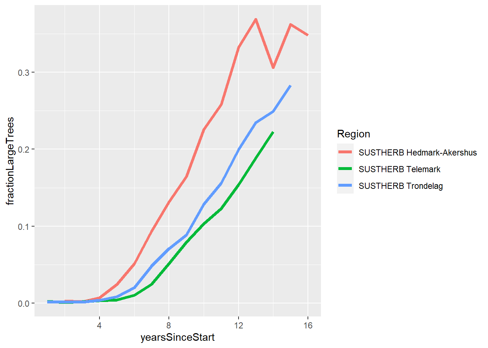
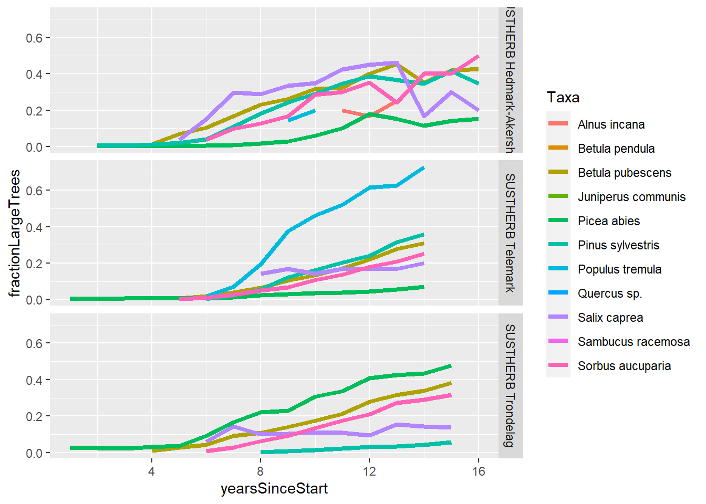
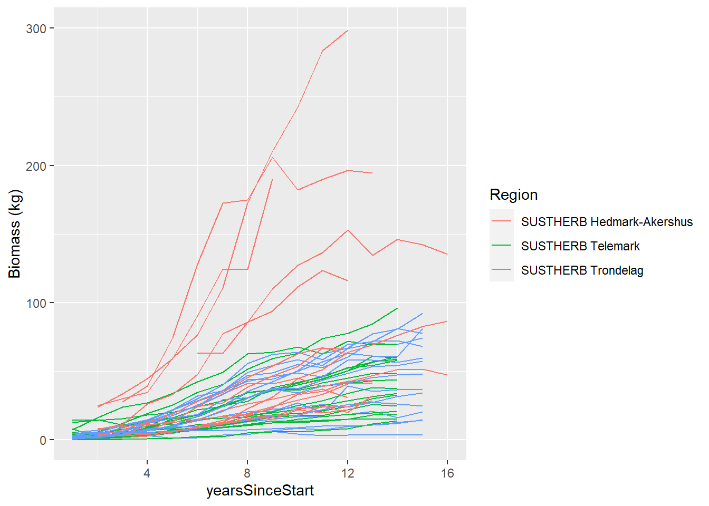
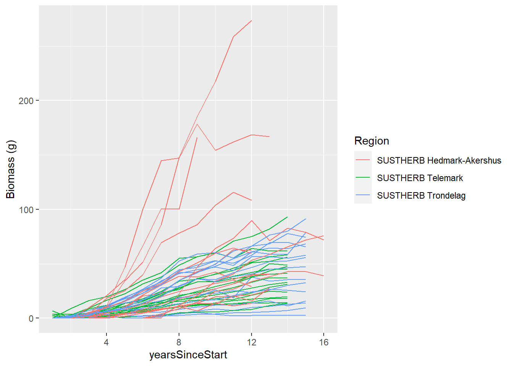
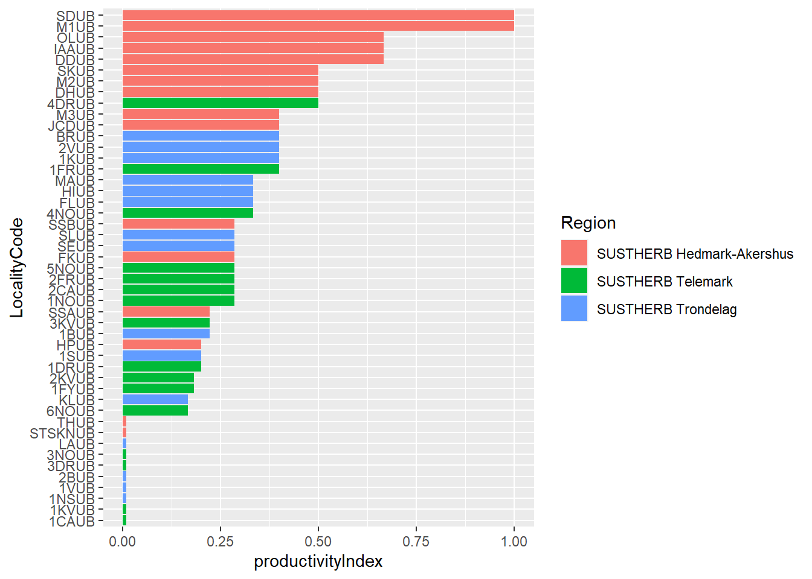

Productivity index
Productivity Index
Background and rationale
Site productivity is very relevant predictor variable for our analyses. A productivity index was used in two previous papers:
- Cervid Exclusion Alters Boreal Forest Properties with Little Cascading Impacts on Soils
- Pervasive moose browsing in boreal forests alters successional trajectories by severely suppressing keystone species
The original index is based on the annual biomass increments inside the exclosures. The allometric models are published in the supplementary information in the first paper. The first paper only had the Trøndelag sites, and therefore it also was able to combine the annual biomass increment with the canopy cover values to get an even better index. The second paper included the Telemark sites, but there has not been calculated a productivity index for the Hedmark-Akershus sites yet.
Goal - To calculate a productivity index for the three regions.
Possible metrics
A problem we face is that tree height is only recorded in height categories up to 3 m. All trees above 3 meters are grouped in the same height category (category 7). This means that as the trees grow much taller that 3 meters, the allometric models dont’twork and can not give us the above ground biomass. There are some possible solution to this:
Use only the first few years of data, before the trees have had time to get above 3 meter.
Build an index using the proportion of stems above 3 meters.
Use the allometric models to estimate above ground biomass per year and calculate the accumulated biomass over time. Chose a biomass threshold and estimate for each site how many year they use/need to accumalte this much biomass from the intial biomass at the start of the experiment.
Option 1 is not great since we and up using very little of the time series, mayby just the first 3-5 years, and there could be other things than productivity that dictated biomass accumulation at this early successional stage (e.g. recruitment).
Option 2 is also not great because height growth is not as correlated to primary production as biomass accumulation, and it is much more dependent on species differences and light conditions. Also, the ratio of large vs small trees is not only affected by the recruitment of small trees to become large trees, but also the continous recruitment of small trees.
Option 3 is perhaps a more sensible option.
Allometric models
Here are the allometric models I ill use.
Below I make R functions for each of the allometric models in the table above.
allo_birch <- function(hgt) {0.170274*hgt + 0.010018*hgt ^2}
allo_pine <- function(hgt) {0.0149667*hgt^2}
allo_rowan <- function(hgt) {0.0053962*hgt^2}
allo_spruce <- function(hgt) {0.038068*hgt^2}Height distribution over time
The number of stems in each height class (1-7) is recorded in the field, annually, since the start of the experiment. Height class 7 include all trees above 3 meters. We therefore have no precice height data for the tree community as more and more trees grow above 3 meters. First we will therefore explore the data and see how many years of data we can calculate the productivity index with.
The sites in Hedmark-Akershus were initiated at different times:
init2007 <- c(
"Hedmark | Maarud 1 | Winter browsing",
"Hedmark | Maarud 2 | Winter browsing",
"Hedmark | Maarud 3 | Winter browsing"
)
init2010 <- c(
"Hedmark | Didrik | Winter browsing",
"Hedmark | Halvard | Winter browsing",
"Hedmark | Stangeskovene Aurskog | Winter browsing",
"Hedmark | Stangeskovene Eidskog | Winter browsing",
"Hedmark | Stig | Winter browsing"
)
init2011 <- c(
"Hedmark | Eidskog | Winter browsing",
"Hedmark | Fet | Winter browsing",
"Hedmark | Kongsvinger 1 | Winter browsing",
"Hedmark | Kongsvinger 2 | Winter browsing",
"Hedmark | Nes 1 | Winter browsing",
"Hedmark | Nes 2 | Winter browsing",
"Hedmark | SOrum | Winter browsing"
)dat <- read_excel("../data/DensityAnno2023.xlsx") |>
mutate(yearsSinceStart = case_when(
Region == "SUSTHERB Telemark" ~ Year -2009,
Region == "SUSTHERB Trondelag" ~ Year -2008,
LocalityName %in% init2007 ~ Year - 2007,
LocalityName %in% init2010 ~ Year -2010,
LocalityName %in% init2011 ~ Year - 2011
)) %>%
filter(Treatment == "Unbrowsed",
EngelskNavn != "Empty sample",
HeightClass >0) %>%
mutate(heightGroup = case_when(
HeightClass == 7 ~ "large",
HeightClass < 7 ~ "small"),
# add tree height in cm as the central value for each height category
height_cm = case_when(
HeightClass == 1 ~ 25,
HeightClass == 2 ~ 75,
HeightClass == 3 ~ 125,
HeightClass == 4 ~ 175,
HeightClass == 5 ~ 225,
HeightClass == 6 ~ 275,
HeightClass == 7 ~ 325)
)Code
dat %>%
summarise(.by = c(Region, yearsSinceStart, heightGroup),
sum = sum(Quantity)) %>%
pivot_wider(names_from = heightGroup,
values_from = sum) %>%
mutate(fractionLargeTrees = large/(large+small)) %>%
ggplot()+
geom_line(aes(x = yearsSinceStart, y = fractionLargeTrees, colour = Region),
linewidth=1.5)Warning: Removed 1 row containing missing values (`geom_line()`).

Code
#Heres a figure like the one above, but one line per species:
dat %>%
summarise(.by = c(Region, yearsSinceStart, Taxa, heightGroup),
sum = sum(Quantity)) %>%
pivot_wider(names_from = heightGroup,
values_from = sum) %>%
mutate(fractionLargeTrees = large/(large+small)) %>%
ggplot()+
geom_line(aes(x = yearsSinceStart, y = fractionLargeTrees, colour = Taxa),
linewidth=1.5)+
facet_grid(rows=vars(Region))Warning: Removed 77 rows containing missing values (`geom_line()`).

The fraction of trees in height category 7 varies with region ( Figure 1) and with species (Figure 2). This is the metric described as option 2 and is not very suited as an index, but I still calculate it below.
Time to reach threshold biomass
Let’s calculate the above ground biomass for each year and each site. First just get the biomass for each species and each circle.
dat <- dat |>
mutate(biomass = case_when(
Taxa == "Picea abies" ~ allo_spruce(height_cm),
Taxa %in% c("Betula pubescens",
"Betula pendula",
"Quercus sp.",
"Alnus incana",
"Salix caprea",
"Sambucus racemosa") ~ allo_birch(height_cm),
Taxa %in% c("Pinus sylvestris",
"Juniperus communis") ~ allo_pine(height_cm),
Taxa %in% c("Sorbus aucuparia",
"Populus tremula") ~ allo_rowan(height_cm),
.default = NA),
biomass = biomass * Quantity)Code
plot(dat$biomass, ylab = "Biomass")
Then we can sum the biomass across all species at each site.
dat_site <- dat |>
group_by(Region, LocalityName, LocalityCode, yearsSinceStart) |>
summarise(Biomass = sum(biomass))`summarise()` has grouped output by 'Region', 'LocalityName', 'LocalityCode'.
You can override using the `.groups` argument.dat_site |>
ggplot() +
geom_line(aes(x = yearsSinceStart, y = Biomass,
group = LocalityCode,
color = Region))Warning: Removed 1 row containing missing values (`geom_line()`).

We see in Figure 4 that biomass accumulated relatively linearly for Telemakr and Trøndelag, but that for the more productive region Hedmark-Akerhus we see a plateu caused by more trees going into the 7th height category where all trees are said to be 325 cm even if they are much taller in reality.
It is maybe an issue that some sites in Hedmark-Akershus had more biomass at the start of the experiemet than some other sites have at the end. This could simply be because the start-up year is wrong for these sites in Hedmark-Akershus. In any case, for this exercise I can normalise each time series against the start value.
Code
dat_site <- dat_site |>
ungroup() |>
group_by(LocalityCode) |>
mutate(
min_biomass = min(Biomass),
Biomass_norm = Biomass - min(Biomass)) |>
ungroup()
dat_site |>
ggplot() +
geom_line(aes(x = yearsSinceStart, y = Biomass_norm,
group = LocalityCode,
color = Region))Warning: Removed 1 row containing missing values (`geom_line()`).

Most sites are able to reach 25000 units of biomass so I will use that as the threshold value.
Code
dat_site <- dat_site |>
group_by(LocalityCode) |>
mutate(
lowestYear = case_when(
Biomass_norm == 0 ~ yearsSinceStart),
lowestYear = max(lowestYear, na.rm=T),
bigEnough = case_when(
Biomass_norm > 25000 ~ TRUE,
.default = FALSE)
) |>
filter(if(any(bigEnough== TRUE)) Biomass_norm > 25000 else TRUE) |>
slice_min(Biomass_norm) |>
ungroup() |>
mutate(
elapsed = case_when(
bigEnough == TRUE ~ yearsSinceStart - lowestYear,
bigEnough == FALSE ~ NA),
productivityIndex = case_when(
bigEnough == TRUE ~ min(elapsed, na.rm=T)/elapsed,
bigEnough == FALSE ~ 0.01))Warning: There was 1 warning in `mutate()`.
i In argument: `lowestYear = max(lowestYear, na.rm = T)`.
i In group 47: `LocalityCode = "THUB"`.
Caused by warning in `max()`:
! no non-missing arguments to max; returning -InfCode
dat_site |>
arrange(productivityIndex) |>
mutate(LocalityCode = fct_inorder(LocalityCode)) |>
ggplot() +
geom_bar(aes(x = LocalityCode, y = productivityIndex, fill = Region),
stat = "identity")+
coord_flip()

Index based on proportion of large trees
I will try and use the fraction of large trees as the productivity index (is in option 2). This is probably not a good metric to use, but I will look at it anyhow. I can extract the fraction at year 11, when we have data from all regions. With this approach we don’t actually need the allometric models.
Code
dat %>%
mutate(yearsSinceStart = case_when(
Region == "SUSTHERB Hedmark-Akershus" ~ Year -2012,
Region == "SUSTHERB Telemark" ~ Year -2009,
Region == "SUSTHERB Trondelag" ~ Year -2008)) %>%
filter(Treatment == "Unbrowsed",
yearsSinceStart == 11) %>%
mutate(heightGroup = case_when(
HeightClass == 7 ~ "large",
HeightClass < 7 ~ "small"
)) %>%
summarise(.by = c(Region, LocalityCode, yearsSinceStart, heightGroup),
sum = sum(Quantity)) %>%
pivot_wider(names_from = heightGroup,
values_from = sum) %>%
mutate(fractionLargeTrees = large/(large+small),
productivityIndex = fractionLargeTrees/max(fractionLargeTrees)) %>%
arrange(productivityIndex) %>%
mutate(LocalityCode = fct_inorder(LocalityCode)) %>%
ggplot()+
geom_bar(aes(x = LocalityCode, y = productivityIndex, fill = Region),
stat = "identity")+
coord_flip()Export data file
Then I export the index Figure 6 as a data file so that we can import merge it with the original dataset in the main analyses quarto file.
dat_site |>
select(LocalityName, productivityIndex) |>
saveRDS("../data/productivityIndex.RDS")How to use the index
Here is how you can get the productivity index into the full, original tree density data set to be used in analyses:
# read data
productivityIndex <- readRDS("../data/productivityIndex.RDS")
# assuming 'dat' is the name of the full density data set, use this code to paste the productivity index values into it
dat2 <- dat %>%
left_join(productivityIndex, by=join_by(LocalityName))